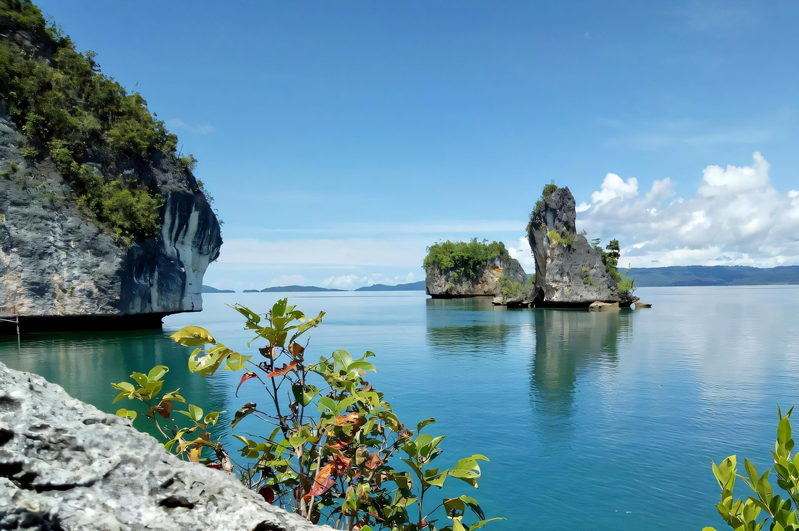

FAQ
Questions worth asking before departure.
Visa, marine permits, diving level, signal, weather and what respectful travel looks like.
Practical questions
Nothing here should be a surprise.
Visa rules depend on nationality and current Indonesian policy. Confirm the current requirement through official Indonesian immigration channels before travel.
Requirements can depend on the current conservation and destination rules. Ask your operator or local authority for the latest permit process before departure.
Some sites can be appropriate for beginners, while current-exposed sites require stronger skills. Choose an operator that matches your certification and experience.
Coverage varies. Plan for limited connectivity and keep offline copies of essential documents, maps and emergency contacts.